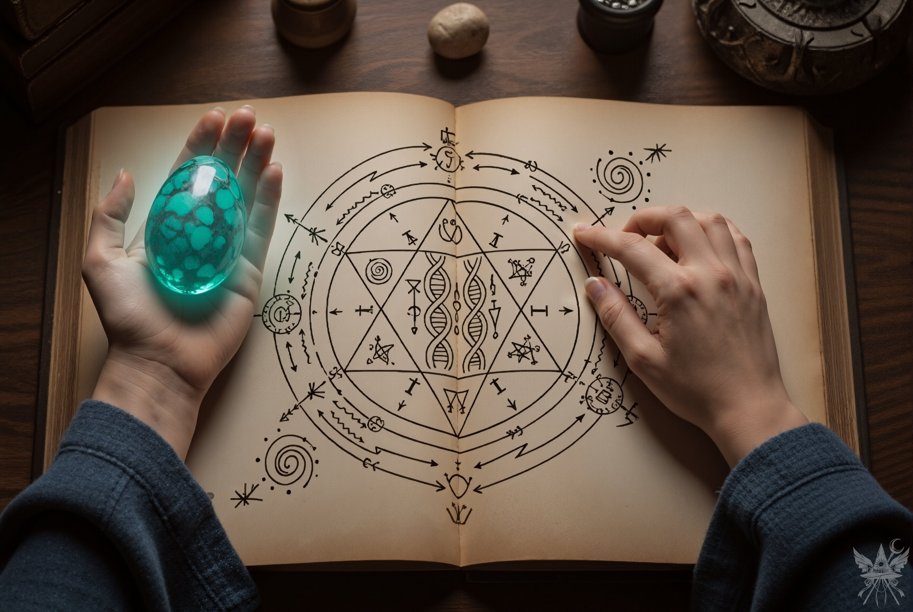
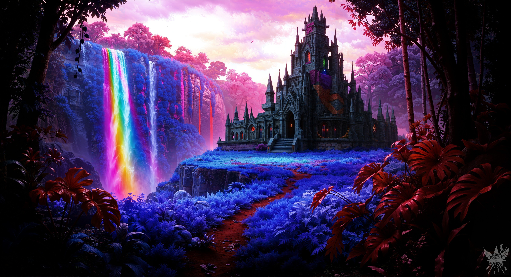
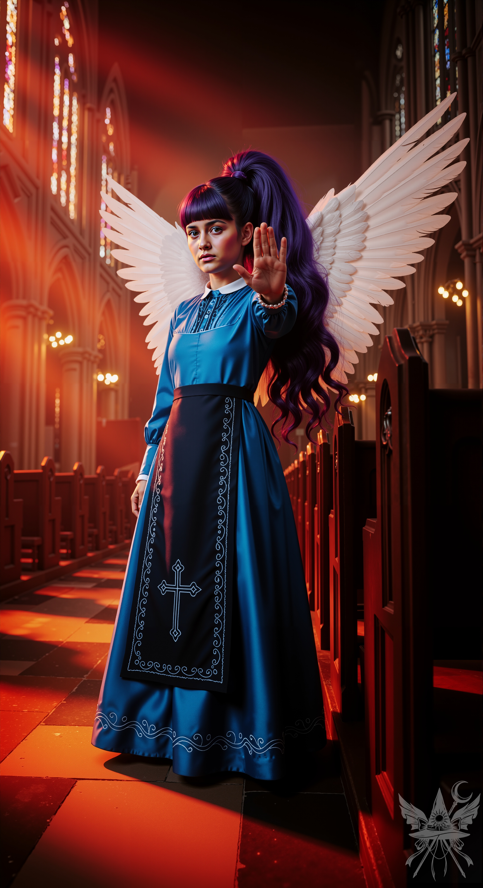

視線は、棚に置かれた卵型の大きなクリソプレーズに釘付けになった。値札には「ヴィシュッダの強力な触媒」と記されている。まさに探し求めていたものだ。
「透明化のポーション」
と書かれた小瓶を手に取り、カウンターの女性悪魔へと歩み寄る。
「あの…、こちらの本はどのような内容なのでしょうか？」
無造作に置かれていた『実践的悪魔学』を指差す。
「お目が高いですねぇ。これ、人間が書いた本なんですよ」
翼のある店員は、滑らかな口調で解説を始めた。
「魔界を旅して生還した狂気的な魔術師が残した研究書です。ただの観察記じゃありませんよ。砕いた水晶の粉末から人工的な悪魔を創り出す理論や、悪魔の『核となる螺旋』を構造的に弄って完全に服従させる手順まで、私たちを徹底的に解剖学・工学的な視点で分析しているんです。魔界の住人から見ても、反吐が出るほど優秀で、恐ろしい傑作ですよ」
「興味深いですね。では、この本とクリソプレーズ、それから透明化のポーションをいただけますか」
「メデっち、本気だったのね。やるじゃない！」
エリスが感心したように横から顔を出す。店員が弾く木製のそろばんの音が響き、代金は3,500シンキと告げられた。銅貨を数枚取り出して支払いを済ませる。
「アタシは少量の治癒ポーションを三つちょうだい。触媒は今の杖で十分だしね」

古ぼけた紙から漂う乾いた埃の匂いと、掌に収まる石から放たれる刺すような冷気が、静かな興奮を呼び起こす。脈打つような魔力の波長が、頁に描かれた複雑な幾何学模様と共鳴し、周囲の空気を冷ややかに張り詰めさせていた。理論と実物が結びつくこの瞬間、日常の空間はすでに異界の気配に侵食されている。
店を出て、再び魔界の街を歩く。広場に出ると、中世風の豪奢な噴水が目に入った。傾きかけた午後の太陽が、街全体を毒々しいほど鮮やかなオレンジ色に染め上げている。
「で、パンデモニウム襲撃はどうするの？ 乗る気になったかしら？」
ベンチに腰を下ろしたエリスが、期待を込めて尋ねてくる。隣に座り、首を横に振った。
「残念だけど、今回は見送りよ。別の計画があるの。手伝ってもらえるかしら？」
「まさか、まだユウゲン・マガンと戦う気？ 言ったでしょ、アタシたちじゃ無理だって。あのバケモノを倒せるのは、メイド長の夢子くらいよ…」
（夢子…パンデモニウムのメイド長ね）
神綺が認める最強の存在。だが、今はその怪物の話ではない。
「ルイズが今どこにいるか、知っていると言っていたわね？」
「それで？」
「実は、堕ちたる神殿にいるのは本物のルイズではなく、彼女の姿に変身させられた妖怪なのよ。オレンジという名前で、おばかで落ち着きがないけれど、しつこいくらいまっすぐで、一途な子よ。彼女を連れ出せば、こちらの戦力になると思わない？」
「ちょっと待ちなさいよ！『こちら』ってどういうこと？ あの化け物と戦うなんて約束してないわよ」
エリスは両手を突き出して警戒を露わにする。
「もし勝てば、ある創造主から莫大な報酬が出るわ。アメジストを探しているのは、その創造主のためなのよ」
腕を組み、じっとこちらを見つめていたエリスの口角が上がる。
「なるほどね、あんた只者じゃないわ！ わかった、できることはやってみる。でも、期待しすぎないでね。まずいと思ったら、さっさと逃げるから」
「正直なのはあなたの良いところね」
エリスは、ルイズの偽装工作の意図を察して笑い声を上げた。
「さすがルイズ、相変わらずの悪党ね。あの冗談好きの女、アタシにかなり借金があるのよ。仕返しを手伝ってあげるわ」
北西の門を抜け、鬱蒼とした熱帯雨林へと足を踏み入れる。不気味に蠢く巨大な植物の間を抜けながら、先を行くエリスに声をかけた。
「エリス、弾幕の防御方法を教えてくれると言っていたわね？」
「簡単よ。魔力の流れを逆にするだけ。負のエネルギーを右手に、正のエネルギーを左手に集めて、両手の間を意識するの」
エリスが掌の間に琥珀色の魔法の盾を展開して見せる。
「さあ、撃ってみなさい！」
右手に握り込んだクリソプレーズに喉のチャクラを共鳴させる。熱を帯びた石から放たれた強力な弾幕は、エリスの盾に吸い込まれるように消滅した。
「やるじゃない、メデっち！ その触媒を使ってアタシの主要チャクラを狙い撃ちしてくるなんて。今度はこっちの番よ！」
不意を突かれた直後、エリスの杖から放たれた弾幕が迫る。とっさにクリソプレーズを通して左手で盾を張るが、異質なエネルギーが盾を貫き、腹部を抉った。息が止まるほどの激痛に顔を歪める。
「言ったでしょ！ あんたの防御じゃ、アタシの第二と第三チャクラの弾幕には敵わないのよ！」
被弾の瞬間に息を吐き出し、魔力の消費を抑える感覚を掴む。肉食植物の牙を黒焦げにしながら進むうち、防御のコツが徐々に身体に馴染んでいった。エリスも容赦なく琥珀色の弾幕を放ち、木々を炭化させて道を切り開いていく。

密林を抜けた先、冷たく湿った空気が肌にまとわりつく。轟音を立てて崩れ落ちる水流の飛沫が、極彩色の毒々しい瘴気となって肺を満たしていく。その圧倒的な自然の狂乱を前に、灰色の石材で築かれた巨大な建造物が、冷え冷えとした墓所のような重圧感を放って鎮座していた。漏れ出す微かな熱を帯びた光だけが、内部に潜む何者かの存在を静かに主張している。
「堕ちたる神殿へようこそってね！」
エリスの軽い声が、張り詰めた空気を揺らす。
正面からの突破を避け、裏手に回って見つけた小さな扉の錠を呪文で解く。重々しい音を立てて開いた先からは、線香と蜜蝋の甘く古い香りが鼻腔をくすぐった。薄暗く湿った石の廊下を、周囲を警戒しながら進む。
入り組んだ通路を抜けると、不意に視界が開け、天井の高い身廊へと出た。
空気が、重く澱んでいる。
左上方の崩れかけたアーチ窓から、強烈な光線が差し込んでいた。だがそれは、夕暮れの温もりなど微塵も感じさせない、地獄の業火や不吉な血の太陽を思わせる禍々しい赤橙色の光だった。光の筋の中に浮かぶ無数の塵が、この空間の時間が永く静止していたことを無言で物語っている。
その冷たい教会のベンチが落とす長い影の只中に、純白の翼を広げた天使が立ちはだかっていた。
神聖な領域の守護者であるはずのその姿から放たれるのは、救済の慈悲ではない。冷ややかで排他的な、魔性すら孕んだ圧倒的な威圧感だ。彼女が静かに片手を顔の高さで掲げた瞬間、物理的な通行止めを越えた、精神を押し潰すような「絶対的な拒絶」の壁が、ずしりと重くのしかかってきた。

「貴様ら！ 何をする気だ！」
氷のように冷たく、刃のように鋭い声が、石造りの神殿に反響する。
「罪深き人間どもめ、ここがどこだと心得る！ 貴様らのような下等な存在が足を踏み入れるなど許されん！ 手間を取らせるな、誰が上位の存在か教えてやる。さもなくば、我が主サリエル様のお仕置きを受けてもらうぞ！」
一切の対話を拒絶するその高圧的な宣告に、息が詰まる。
だが、隣に立つエリスは星形の杖を握り直し、こちらへ向かって好戦的な笑みを浮かべた。
「お仕置き？ 面白そうじゃない！ やれるもんならやってみなさいよ！」
悪魔の瞳が、獲物を見つけたように爛々と輝いていた。